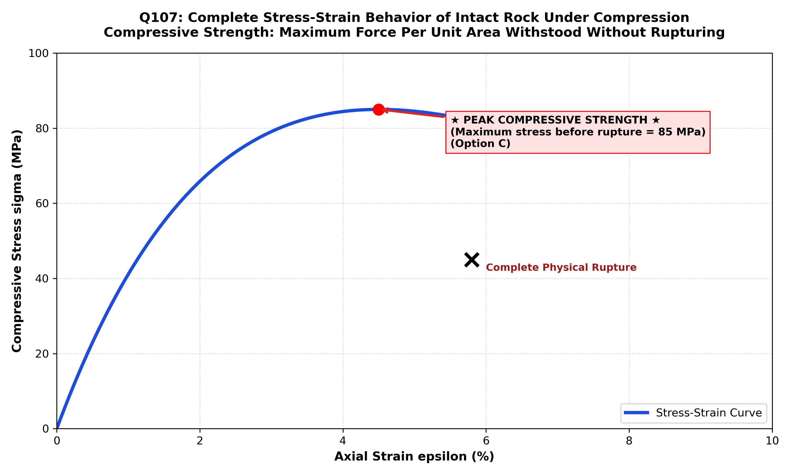
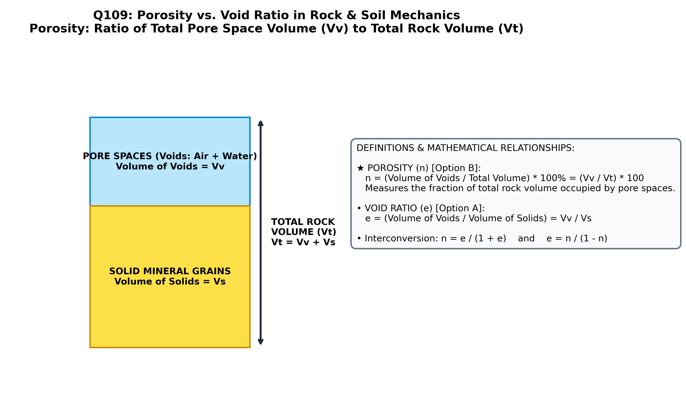
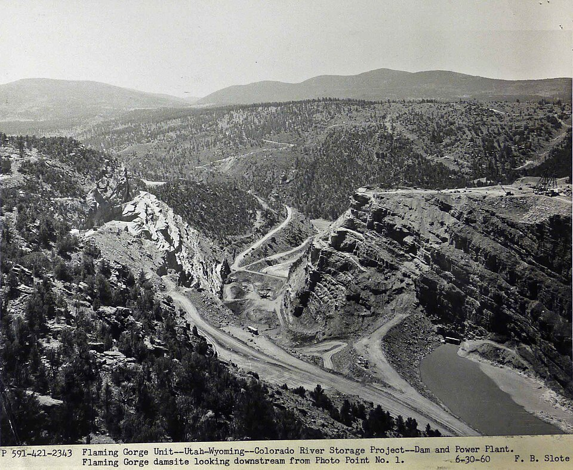
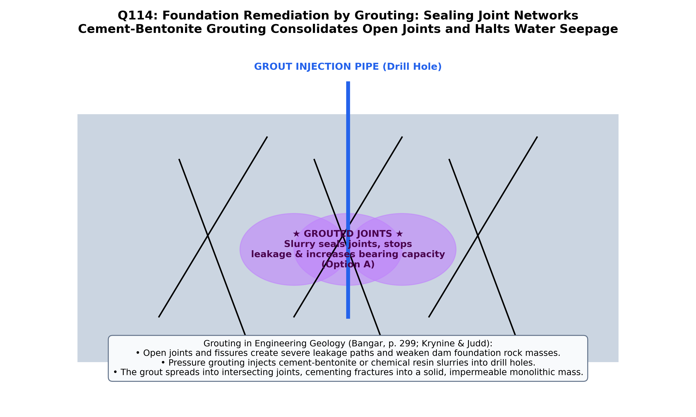
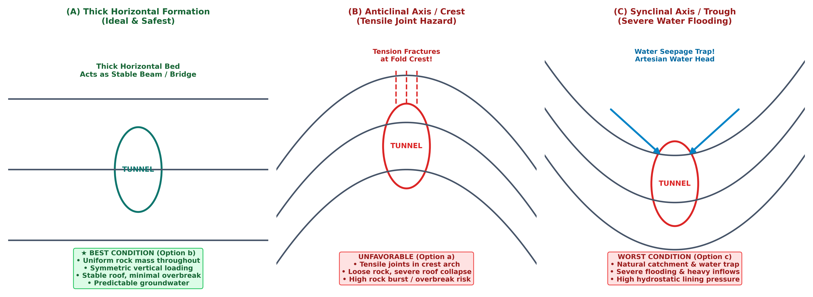
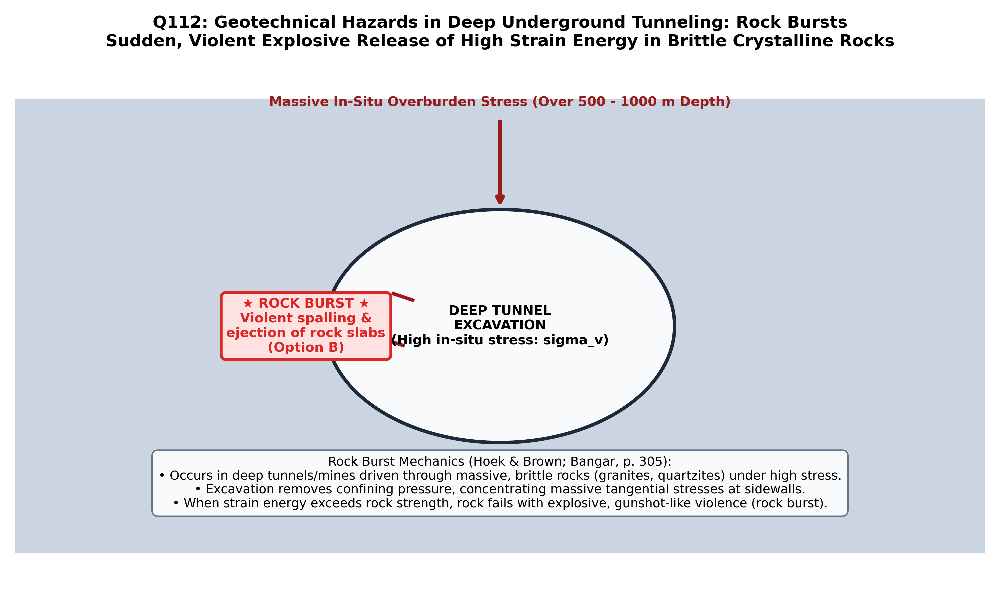
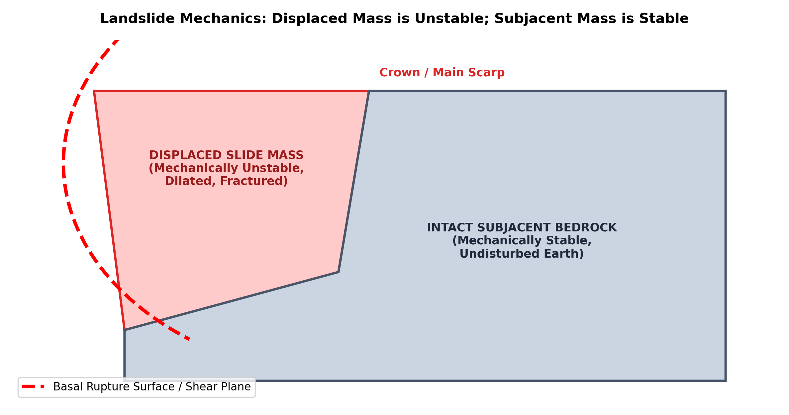
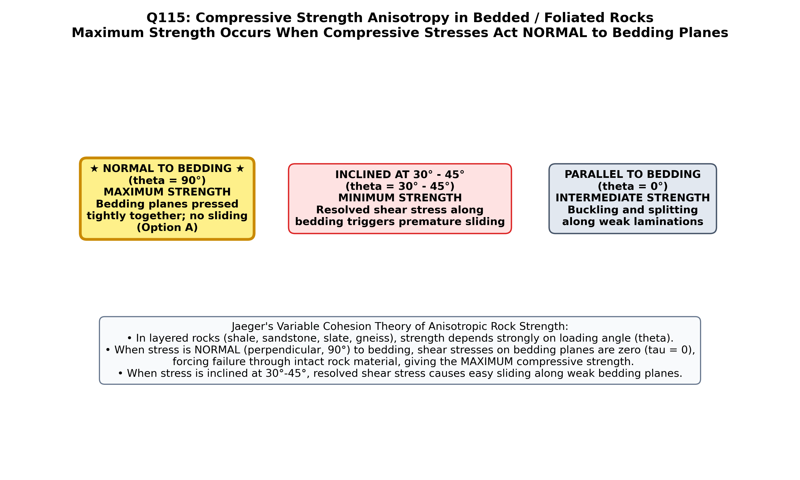
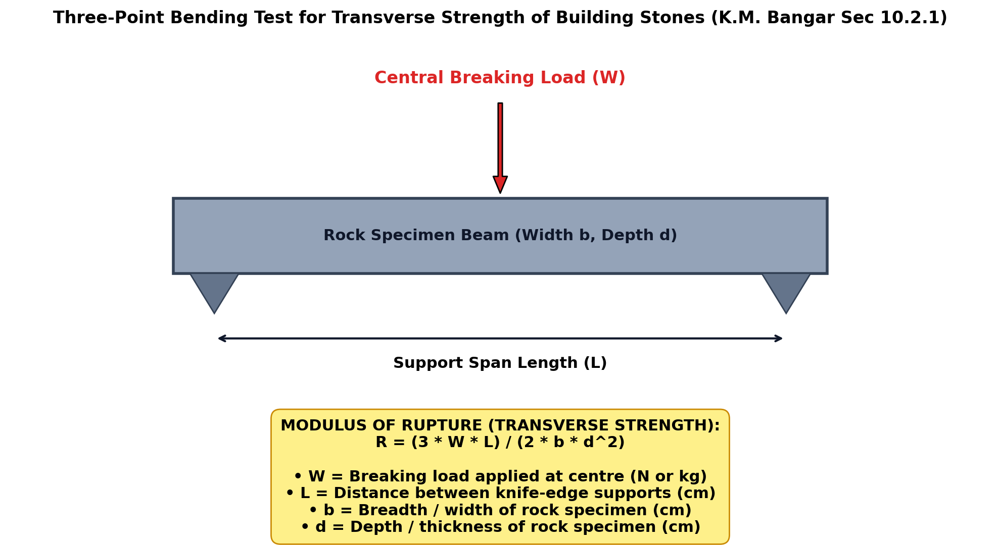

Sn ee Coe ce Engineering Geolo ay; ey ecaere x Seu ing Seem Ne Sera E rs 4 10.1. GEOLOGY AND CIVIL ENGINEERING ag The value of geology in “Mining” has long been known but its use “Civil Engineering" has been recognised only in comparatively ree years. The importance of geology in civil engineering may briefly be ou lined as follows. = 1, Geology provides a systematic knowledge of construetix material, ils occurrence, composition, durability and other p p ties: Examples of such construction materials are building stone roud metal, clays, limestones, and laterite.! 4 m 2. The knowledge of the geological work of natural agencies as water, wind, ice and earthquakes helps in planning and carrying out major civil engineering works. For example the knowledge erosion, transportation and deposition helps greatly in solving d "expensive problems of river control, coastal and barbour work an soil conservation, Z 3. Ground water is the water which occurs in the subsurface ro ck The knowledge about its quantity and depth of occurrence Tequired in connection with water supply, irrigation, excavalit q and many other civil engineering works. E 4 4. The foundation Problems of dams, bridges and buildings ean concerned with the geology of the area where they Le! linet In a works drilling is comunonly undertaken to 3 P ground conditions. Geology u1 ini relat: ing the drilling date, ‘ology helps greatly in interpt 7 5. In tunnel sa a he sibility ering roads, canals, dacks, and in determine iB and structure of yt Slopes. the knowledge about the nati (i) of rocks is very necessary, a ENGINEERING GEOLOGY as9 4 6, Before starting a major engineering project at a place, a detailed es. geological report which is accompanied by geological maps and Pag sections, is prepared. Such a report helps in planning and con- ‘Ge structing the project. Pia a 7. The stability of the civil engineering structures is considerably aa increased if the geological features like faults, joints, bedding asi planes, folding, solution channels, etc. in the rock beds are properly located and suitably treated. % 8. In the study of soil mechanics, jt is necessary to know how the, soil materials are formed in nature. d 9, The cost of enginccring works will considerably be reduced if the geological survey of the area concerned is done before hand. For a major engineering project precise geological survey is carried out saat 3 and the results thus obtained are used in solving engineering problems at | a: hand. Although the geological work is done by an engineering geologist, eyes this does not mean that the civil engineers have nothing to do with the H sa geology, For the civil engineers, the knowledge of geology is essential for understanding the geological reports and for using the geological data for ey solving engineering problems, If adequate geological investigations are car- q ried out before constructing major engineering works, many disasters can Deeiisss be prevented and human life and properties can be saved. 10.2, BUILDING STONES The building stones are products of rocks that are used in constructing buildings, dams, bridges, etc. The rock material used for construction in- ' cludes: (é) building stones—in the form of masonry blocks, (ii) rubbles —in zi wg the form of small irregular fragments, (iii) crushed stones—ito make con- F crete, and (jv) limestones—to make lime and cement. F
10.2.1 Properties of Building Stones | “wi
In order to select the rock material for construction, the properties that ee are commonly examined are: (i) mineral composition, (fi) texture, (if) HE. sf structure, (iv) porosity, (v) permeability, (vi) durability, (vii) strength of rock, | serene and (vifi) heat resistance. i Mineral Composition, The rocks are aggregates of minerals. If the mineral constituents of a rock are hard, free from cleavage and resistant to Pt weathering, it is likely to:be strong and durable. The rocks which are rich micas in weak minerals, such as micas, chlorite, talc, felspars and clay minerals, as are not durable. aay, ee Texture. Fine grained rocks are generally more dense and stronger than * ie coarse grained rocks. It is for this reason that the basalts and dolerites are F e widely used as road metal.... spt 360 PRINCIPLES OF ENGINEERING GEOLog j si ure. Many rocks contain structures a like » yauiticatin, tarnination, foliation and q cleavage. Such racks bear greater loads if a F are placed in the construction parallel to the E planes of weakness (Fig. 10.1). Further, since: ininated or banded rocks may scale badly d due to weathering, it will not be wise to place > aaah the civil engineering works with the ‘ cleavage or bedding planes vertical:
Porosity. The porosity of a rock is the a ratio of the volume occupied by pores (0 the Cd ) Toral volume of the rock sample. It is generally Fig. 10.1 (a) High crushing expressed in percentage of the volume of the strength, (b) Low crushing” = caraple, If W, is the weight of the dry rock = strength. 4 sample, W, is the weight of the sample when itis inade saturated with water, and V is its total volume, the porosity P can be determined as follows. ar, A less porous rock is generally more durable and strong and therefore it is preferred for construction purposes. “ Strength of Rock. The strength of a rock is determined by knowing il crushing strength, shearing strength and resistance to abrasion. The “crus) ing strength” is the resistance offered by a stone to pressure. The resistane offered by a sione to shear stresses which tend lo move one part of ¢ specimen with respect to the other, is called “shearing strength”. The stones which are to be put in the foundation of civil engineering structures, must have high crushing and shearing strength. For making road metal the ro ck: having high crushing strength are selected. * The resistance of a stone to scratching or rubbing action is called i resistance 10 abrasion”. The stone used for paving and flooring purpose iust have high resistance to abrasion. 7 It idee is the capacity of a rock to transmit wale of the rocks, The pe ee hich the water can percolate through the opening i lity of rocks is particularly i i mb of engineering problems such as th Re y important |e water supply, sanitary engineering a ei connected with dams, res oir are considered handful because tutes. The perme ala lead = = fue ction of the ucts © seepage of water which may a urability. Th ‘li: 4 size, strength i pa oe stone is ils capacity to retain its original do not resist weathering, deca bess along period. Some rocks whi rock is directly relaed to ite Pinned ene early. The durability of% o incral composition and texture.
In cold countries the frost action plays an important part in disintegrate- so, ing rocks. The water which enters into the openings of a rock, freezes during ile the night, On freezing it induces tensile stresses due to which cracks develop ibaa in the rocks. ae.
Building stones in big cities are severely affected by carbon dioxide and Sete sulfur dioxide gases which are released into the atmosphere by various es industries. The calcite present in the limestones and marbles may be transformes into sulfate and scaling may result, During continuous rain the pores in a stone may be filled with a saturated salt solution. Then the crystallization of salt occurs which causes 9 disintegration of stones.; Heat Resistance. When rocks arc heated to a high temperature and then cooled, they may get damaged. This is particularly the case if they are rich se 4 in minerals like calcite and felspars. The rocks in the order of decreasing: resistance to damage by fire are sandstones, granites, limestones, gneiss and eres marble. mew 10.2.2, Rocks and Bujlding Stones ™ The rocks which are commonly used for construction works are as follows.
(i) Granites. Granites are used:for construction purposes on account mueee of their high crushing strength, low porosity and pleasing pink or grey colours, They are capable of taking good polish. Granites are commonly used for massive masonryes, and for architectural and ornamental work, The granites occur abundantly in regions oc- r cupied by the Archaean rocks. v (ii) Basalts and Dolerites, The basalts and dolerite are fine grained ‘ igneous rocks of basic composition. These rocks serve as excellent ee road metal because of their high crushing strength. Although the basalts are easily workable and durable stones, they are not used seh commonly as building stone duc to their dull and unpleasant colour. The basalts which are commonly known as the Deccan connie traps occupy a wide region of western and central India. Bo Gili (iii) Sandstones and Quaritzites. Well cemented sandstones generally: have all the characters of a good building stone. In India the Upper a at Vindhyan sandstones are widely used for building work. They at A ee used both for masonry work and as flagstones. Many pane = buildings of Delhi, Agra and bs leer oe a stone Vindhyan sandstone. Quartzites do not A ing oe because their extremely hard nature renders their working esis ficult, a.
gene, aia PRINCIPLES OF ENGINEERING Gegy sause of their homo, a “Lit and Marbles. Because of thei ECNCOUS tex @) Le ballly and pleasing colours, limestones and yp, pad a ane and ornamental stones. The limestones gy vals used as building stones, they are also used for making 2 and cement. sesanen 3 ‘i a hic work which can be by ) Slate. The slate is ametamorp!: roken ¢ (0) a ‘hin smooth slabs. It is used chiefly for roofing and p in buildings. ‘a § 10.3. GEOLOGY OF DAM SITES. 4 The dams are barriers which are constructed across rivers to store They are built mainly to control floods, far irrigating lands, for gen electricity and for supplying water 10 industries and cities. A dam thi more than one purpose is called a “multipurpose dam”. E
10.3.2 Terminology:
Spillway. It is a structure made to discharge the surplus wa storage reservoir into the river on the downstream side of the dam. the spillways and gates, the flood water can pass safely without caus damage to the dam. q Heel of Dam. The portion of a dam “a that touches the ground on the upstream ~¥--- E side, is called the “heel ofa dam” (Fig. LL q Toe of Dam. The portion of a dam q that touches the ground on the downstream side, is called the “toe of adam” (Fig, 10.2). weEL! e F aE ot Dene sle ea t.--o 2am ine that passes along the length of a Fi he a ‘3 n ig. 10.2, Showing heel a dam through its centre. toc of adam.
nn The sloping sides of a river valley upon which h th » are keyed, are called “abutments”, sg wee ee Seung is a method in which suitable mixture OF § mulevalisinjeoed ne he ee ee emulsions is usual into the rocks to seal the openings. The grouting is usually pumped through holes drilled i pene a ing is done to consolidas les drilled in the rocks for this purpose® through them, le the rocks and to check the seepage ©
10.3.3 Types of Dam g
The dams ma F 'y be classified j 4 dams, and (ii) earth fill ene two groups: () concrete an di » RE concrete and masonry dams are @ twitt to big heights. The eanth dams, however, are used for small projects with a maximum height of about 109 meters. The main types of dams are as follows.
: () Gravity Dam, It is a massive Structure of concrete or maso: which stuunds by ils own weight, Gencrally » sound Ganiee rock is required for the construction of Bravity dams.
(i) Arch Dam. Itis an arch-shaped structure of a single concrete wall, the convex mae whet faces upstream. The arch dams transmit water pressures to the abutments by arch action. Hence very strong abuunent rocks are required for Constructing arch dams.
(iii) Buttress Dam. In this type of dams buttresses are constructed at the downstream side to Support an upstream deck of reinforced concrete. The buttress dams are usually constructed on a good 7 foundation rock, (iv) Earth Dam. The earth dams are constructed mainly by soil or earth. These dams have an advantage as they can be built on earth or poor rock conditions,
10.3.4 Forces Acting on Dams f
Water Pressure. In Fig. 10.2, Tis the Pressure of reservoir water which tends to displace the dam horizontally, W is the weight of the dam which acts downwards and tends to key the dam in Position and R is the resultant of forces T and W which indiates that when the reservoir is full, the toe of the dam is overloaded and the heel is relieved. Therefore in order to make the dam stable, the ratio T/W has to be kept smaller, i Pore Pressure. The water entering in permeable rocks below the dam, oxerts an upward pressure on the base of it. This pressure which is equivalent HI to the hydrostatic pressure, is called the “pore pressure or uplift pressure”. Tt acts against the weight of the dam and thus helps in sliding or overturning it. H 10.3.5, Prohlems Associated with Dam Sites Most of the dam failures that have occured in the past are not due to faulty design or construction but mainly due to neglect af the geological ii flaws, The main geological problems that are usually met with at dam sites I are as follows. 3 11 (®) Dams on shales.
(ii) Dams on soluble racks. (ti) Dams on strata dipping upstream. Hl (iv) Dans on strata dipping downstream. (¥) Dams built across strike of rocks. if (1) Dams on jointed and permeable rocks. zone ea pRINCIPLES OF ENGINEERING GEOLOgy a (vii) Dams 00 faults. J “. ns onsbales: Shales ar of two pees cements shales, and (ii) compaction shales. The ee ion shales are stronger and do not disintegrate wheD subjected to wetting and drying, The compaction shales on the other hand are soft and they slake When. subjected (0 alternate welling and drying. Their ee strength is low and they become plastic when wetted. The compaction shales have @ tendency (© flow away from the loaded area and therefore the structure settles. Swelling and caving may result during the excavation work which may cause trouble. If dams have to be built on compaction shales, heavier structures I gravity dams should be avoided. After excavating the weathered. rock either concrete should be placed immediately without delay or its surface should be coated with asphalt to avoid swelling and caving. A (ii) Dams on Soluble Rocks. The soluble rocks include limestone fl dolomites and marbles. These rocks are generally sufficiently strong to support the weight of the dam, but they may contain 7 underground solution channels and caverns. If such solution channels are present at a dam site, the leakage through them may be ‘on such 2 large scale that the reservoir may nat hold water to long, The treatment of such openings is very expensive thereto they should be carefully looked for in the soluble rocks befor constructing a dam. a q (iii) Dams on Strata Dipping Upstream. The dams located on rock 6 dipping upstream represent jdeal foundation conditions, They @ the most capable of: supporting the weight -¥i--- of dams and the pres- wren 3 sure of the reservoir because the resultant of ‘ these twa forces acts nearly al right angles to ¢ oF the bedding planes of °,* Wie ET rocks (Fig, 10.3). Fure °° 28,37 Sioa ther, the upstream dip °° 2 MO 4 = does not allow 7, ar SME nee, iOS Dam ones dipping upsttea the dam. As a result the leakage uplift pressure will be i. emia (iv) Dams on Strata Dipping Downstream. The dams constructed on rocks dipping downstream (Fig. 10.4) may not be safe due to the following reasons.
(a) The percolation of --¥--,: water may lubricate the = junctions of rock beds which may facilitate sliding of dams. N (b) The water percolating “A 2SSee1 bees through the strata dis- SRS solves the cementing: material of rocks and z on enlarges the openings Fig 104, Deaton ste dipping by mechanical erosion..
This undermines the strength of the rocks and increases the seepage of water.
(c) The water which enters into the openings of rocks below the dam, causes the development of uplift pressure which tends to decrease the stability of the structure.
(d) In Fig. 10.4, R is the resultant of the weight of the dam and Pressure of the reservoir water. In this case, this resultant acts nearly parallel to the bedding planes and endangers the stability of the dam, (v) Dams Built Across Strike of Rocks. The best foundation condition is when only one uniform rock is present along the length ~ " of a dam. If a dam is aligned af across the strike of strata, its pe Lae foundation will be on different ESF off rock types of varying properties. é aaa Wy In such a case, there are chances BAM of unequal settlement of the Te. Wy dam. Further, as the bedding: —S ae Y planes of strata lie across the axis MW RY of the dam, there is a possibility SS SY of serious leakage of water not only through the porous beds but Fig. 10.5. Dam aligned across the through bedding planes also strike of rocks.
(vi) Dams on Jointed and Permeable Rocks. Where highly fissured, jointed and permeable rocks exist below the dam, they will not only cause leakage of water, but also build uplift pressure at the 366 PRINCIPLES OF ENGINEERING GEQLOgy hase of the dam. The uplift pressure acts opposite to the weight of the structure and it may cause sliding. Such rocks may ye _ j consolidated by grouting. & 7 ‘ iblesome if’ the: os vif) Dams on Faults. Faults are most trouble Y are ene (7, Dan ed across the length of the dam. Its better to avoid fault zones for the construction of dams. The fault zones cause the following troubles. a (a) It is difficult to seal the fault zones and prevent leakage of water from the reservoir at reasonable cost. om (6) The rocks may weather up to a great depth along a fault zone, This requires digging and scraping of the weathered rock tg a great depth and refilling the tench with concrete, a (c) The crushed and fissured rocks that exist along a fault: zon in the foundation, have to be grouted intensively to in vase their bearing strength. (d) Along a fault some displacement of strata is always expe: ed,; perticulurly during an earthquake, Such a movement will not only reopen the fault fissure but also rupture the dam. x (e) A site where the fault is known to have been active in recent years, should always be discarded. a (ili) Abutment Problems. Careful attcution should be given to the orientation of joints, bedding planes, foliations and weak zone: that are present in the abutment rocks. If such weak zones ie parallc] to the thrust of water in the reservoir, the stability of th structure may be endangered. The rocks that exist in the abutments” of an arch dam, should be strong enough to resists the pressure: without being crushed. i 10.4. GEOLOGY OF RESERVOIRS 4 f ti The artificial lakes which ore created by constructing dams across ey are called “reservoirs”. A reservoir may fail either duc to excessive ‘age of water or as a result of rapid sedimentation. be ies Problems Associated with Reservoirs a main geological probl. Z, groundwater Sulla problems connected with the reservoirs are > (i) ae. (i) permeable rocks, and (iti) silting. a TeSecoevele leanne ‘The emount of leakage of water [igi table is led by the depth of water tuble. If the water So near the ground surface th Peter: Teservoir does not rise above i ‘ace that the water level in the ‘occur (Fig, 10.6). On the Ve iL, no serious loss by leakage will the ground surface de tet hand if water table lies deep belO® water level in the reservoir will stand EF os ENGINEERING GEOLOGY a 4 F ey to es i “8 en Ca sei ey [sae aa 2 oot a Fi.. Water table being ne: = @ Tae geand tatters PRAIO igi! leakage due to deep leakage will not occur, above it. As a result, leakage will i on the permeability of rocks ig. 10.7) amon will depend pee" f (ii) Permeable Rocks. During the geological investigation itisneces- aa sary to locate the highly permeable rocks that are Present in the ee reservoir area. The rocks which are highly fissured, intensely i bey Jointed, faulted or have solution channels, are likely to cause i; serious leakage from the reservoir. i: Generally the leakage of water from the siraia that have |) Pree downstream dip, 1 will be more than: those -which have + qeseavoun 1 upstream dip. Ifa | f permeable rock [=> ES bed outcrops on PSSST Sete EN, | 9 in the reservoir, in [= Te may not only Fig. 10.8, Showing possibility of f is cause leakage but leakage and landslide. | a may also cause: ae land-slide (Fig. 10.8), Such a landslide may produce an opening ee ee: in the reservoir rim through which the stored water may escape, i | Aone (iii) Silting of Reservoir. The reservoirs built on rivers which carry if: large amount of sediment, may silt up very soon and its water baa seinen storage capacity may be reduced considerably. The amount of silt | pinta Produced and supplied to the rivers depends mainly upon the —— lithological character and topography of the catchment area. The aaa rivers flowing over the softrocks and high gradient areas, carry A ee Breater amount of silt. On such rivers silt traps may be constructed ae Ne Upstream in order to check the rate of silting. in the reservoir, | sake Provisions should also. be-made for washing out the silt through 5. ie. ae the passages in the dam. he (vii) eet: oe "PRINCIPLES OF ENGINEER: STIGATION OF DAMS = 36€ 105, GEOLOGICAL INVESTIG: AND RESERVOIRS Pa: q investigation of the area is done to dete, us Cae afghle site for the dam and reservoir tg bow flaws and 0° is investigation may be suramarized as follows The objects of this investing DM J, To study the physiographic features of the area, Be 2, To determine nature and depth of filling in the jj, en the dam site. ‘ 3. To delineate areas favourable for the location of Spillyy, sion tunnel, power house, ctc. i 4, To determine the lithological composition and struey, rocks present in the area, ¥ 5. To locate structural defects such as faults, fractures, jg ’ tion channels, etc. in the rocks. % 6. To locate potential leakage zones in the vicinity of the reservoir. 7. To evaluate the rate of silting in the reservoir, a 8. To locate construction materials in the vicinity of the d
10.5.1 Geological Survey
Air-photos and geologic map of the area under investigation is which serves as a guide for detailed geological survey. The g investigation is normally started with the interpretation of air-pi maps, followed by ficld work and laboratory testing, and end:
Pripifation of field report. This investigation may broadly be su into three groups: (study of physiography, (ii) study of lithology, Study of geological structures. 2 ( Study of Physiography. The physiographic charac te rast: physiograp Ae VOW area are studied on the air-photographs. This'gi pa ( shape and size of the river valley, (ii) its ee oe (iii) stability of valley slopes, and (i) | 104 * OF scouring and erosion, 4, fines Tocks‘in the iver valleys are often co eret at he about the thigh nt Yatiable thickness. It is necessary river be obtained gene's of filling at the dam site. An idea supp From the geopha as 88€ of development of the river % in a ae ¥Sical investigations, a Pres: Suspected, Tas fistenee of a concealed fi at ocular! iver 2 Mountain range, Yy the case where a riv Be GINEERING GEOLoay 369 h Praha bd {he \topography and rock auterops of the valley leg sides, The Potential areas for locating spillways, diversion tunnel, fbn Power house, etc, may be delineated gic hia w ae a red aed nd Held work a detailed geological map Be kad is i lithological cha je seach NER the area are examined et Characters of the racks present in eye The previous and imperyi. | Pervious strata are located and the potential Icakage zones are delineated, Where rocks contain joints, _— fissures, solution channels, shear zones and faulis, there is every possibility of seepage of water. @ ‘The rocks present in the foundation and ubuunents of the dam, must be sound enough to withstand the expecicd static and ff dymamle pressures. The socks exposed in the rovervoir rim must E he resistant to solution, erosion and other damaging elfects of - 4 water. By studying the lithology and topography of the catchment area of the river, the amount of silt likely to be contributed ere annually to the reservoir must be estimated, as Efforts should also be made 10 locate the construction materials near the damn site, This will cut down the transport cost 4 considerably. The important construction materials are masonry F ‘sp ‘stones for rip rap, gravels and sands for Aggregate and clay for ie impervious filling.: (tii) Study of Geologic Structures. The geological structures of the " rocks present in the area, have an Important bearing on the design and stability of the dam. A site whete the strata dip upstream is i 4 preferred to that where they dip downstream, i # The rocks existing in the foundation of a dain and reservoir | é walls should be watertight, If some potential leakage zones sare Present, they should be «clineated. Further, the leakage of water és through a porous bed may give risc to landslides. If rocks exposed al in the foundation and abutments of the dam are highly jointed, | tl the spacing and intensity of joiating, are recorded. This will help | oi noe in assessing the grouting problem. Faults if present should! be | * carefully delineated because they would require expensive treat- | ment. Breqiesome - shiek ind passage Which is open cio hat A “tunnel” is a nearly {anes at ee eurfackel Below sites ) eos th the ends lo,the ground surface. Tus railways, roads, canals, water oe S$, and through mountains for carrying railways, Sy. Pee y. and pease etm of pipe line and carries water under Se A tunnel which functions as are ch water tunnels are used in produc-, ee ure is called “pressure tunnel”: 3 nl al oe eo Sees 5% PRINGIPLES OF ENGINEERING g, ine hydtroclectricity, The lining of « pressure tunnel is subjected 4g types of pressures: (/) internal hydrostatic pressure, () external rogy sure, and (iii) external hydraulic pressure. The external hydraulic pee develops when water from the tunnel secps into the adjacent country, 4 In water tunnels an important function of lining ts to reduce the frigg 4 losses.
10.6.1 Constructional Features a
Tunnel Lining. In hard, massive and unfractured rocks the tunne}, be constructed without lining. However in weak, thinly bedded and frag i rocks lining has to be given to support the roof load and to preven seepage of large volume of water into the tunnel. The concrete, pig reinforced is generally used for the lining. 3 ‘Tunnel Support. While tunneling through the rock or soil, suppor q generally required to prevent the rock material from caving. If tunne ports are not placed, the material will fall piece by piece and “overbr will resul The tunnel walls and; roof are supported by wood and a steel. These supports may be ‘i removed prior to lining or they QO: may be allowed lo remain in place oupeenene t and are embedded in the concrete. SS:
Overbreak. During the ex- Q cavation work some rock outside 4 the desired perimeter of the tunnel SS YN is removed so that a concrete OS lining of proper thickness may be re placed. The rock excavated q beyond the required cross-section of the tunnel is known as “over- SS \ break". (Fig, 10.9). As the over- Ss.
ie has to be filled back with (i) concrete, il increases th: " " ot lining. The hie factors which #109. Overbreak in inlined strat Cause overbreak are: (7 5 § closely spaced joints and fraceees ytd nd tough rocks, (ii) presene (iy) delay in Placing roof suppor At oreaente sf thinly bedded fe s. i ae ‘Tunnels in Soft Ground; e soft ground include 4 les e possess little oF no Shee jeg and unconsolidated materials W dry rare lar Of gravels, Sands, Sills cia e area blasting Ae Excavation thiongyeg aA on aks. ae divided into tee ee are. always Nece: Sry, Tey Oe groups, Ssary. The soft ground may, (i) Revelling Ground. The material of the revelling ground flakes and breaks into picees sometime ater it is exposed.
Gi) Running Ground. Such a ground consists of clean loose gravels ‘or sands which run into the excavation.
(iii) Squeezing Ground. The squeezing ground consists of material that contains a large umount of clay. Such a Ht material flows into the tunnel plas- ot tidally. By In shallow tunnels that are driven in the: 4 soft ground, the reof load is enormous. It will i.
be equivalent to the full weight of the overly- i nyt ing material and therefore, a very strong lining ry " is required to support it, In some cases, an H 4 inverted arch has to he put on the floor of the Faget tunnel to prevent the wet material from being; AD i pushed up into the tunnel. Because of these 1 nN ' difficulties shallow tunnels are not constructed 1 | at and deep open culs are generally made instead. " oe In deep tunnels where the thickness of the yvooO™ roof material cxcceds three times the diameter seueriter of the tunnel, the roof load is insignificant. It is shown by W, in Fig, 10.10, However, if the = cohesion of the material deteriorates, the - i weight may increase to W, which is still not Fit: 10:10. Deep tunnel in i ’ s Aol alluvium. The roof load is much. insignificant 10.6.3, Tunnels in Rocks Tunneling through rocks requires blasting. If the rocks met with are structurally poor, support is often placed under the wnnel ceiling to prevent the rocks fromm falling during blasting. The geological factors which influence tunneling are as follows.
(i) Swelling rocks.
(ii) Inclined strata. 7 (ii) Folded rocks.
(iv) Fault zones. (1) Jointed rocks. (v7) Water bearing rocks.:
(i) Swelling Rocks. I! tunnel is to be constructed through swelling rocks, it will require special treatment. The examples of swelling rocks gre shale, unconsolidated wif and anhydrite. Such rocks oi. In such cases i ee absorb moisture and swell very ae ms pry be used. The swelling rocks should also be protected from welting 1o the greatest possible degree. § (ii) Inclined Strata, In inclined rock beds when a tunnel is driven parallel to the strike direction, there is a tendency in the rocks i; fall into the tunnel from the side where Ure beds dip into the tunnel (Fig, 10.41). This is particularly the case if the hard and soft rocks, | j such as sandstone and shale are interbedded. j ETO D Lo Ge Kae 7 at, po PSS NZ _ iar ‘ a x3 Ross Poy sva tan eces pe y
the in the shape of SNe ee normal keystones Fig. 10.15. Tunnel across the axis of a syncline. and therefore they are unty a NG likely to fall into the tunnel. ae Ly Sa \ If the water-bearing strata I he to YSSSS are met with, the water TunweL trouble will be less because 4 y Top te ee ON TW in anticlines the water flows atl WME RS AQON away from it (Fig. 10.14 and
(v) Jointed Rocks. Joints at one hand may help in excavating the J a rocks but on the other hand they may prescat difficulties in wun- |: neting. If the joins are closely spaced and water-bearing, rockfalls bist and groundwater sccpage may occur into the tunnel. Ht a lake, ee canal of river is present in the vicinity of the tunnel, its water may Bessie drain into the excavation through wpen joints and fissures.: i (vi) Waterbearing Rocks. Driving a tunnel though water-bearing “er rocks is 2 difficult job, During excavation the groundwater rushes Ppsissitn nto the wunnel and causes flooding, This makes construction work Bisse difficult, If some clayey rocks are present, their strength may be wsrin-=8 strongly affected by the flow of water through thei. Phones 10.7. GEOLOGICAL SURVEY OF TUNNELS ifm In majority of cases, the location and alignment of tunnels and sizeof 8 the hore are established prior to the geological survey. Before starting the «fh es 374 PRINCIPLES OF ENGINEERING GEQLOgy geological investigation, photo-geologic interpr tation ee ea a ‘he wunel alignment, This will provide information on the opograp we ‘ature of surface material, broad geologic structures, water conditions and vegetation. i: ‘ The geological investigation is donc to disclose the nature and structure: of the surface material and subsurface rocks The geological defects such ag ei faults, shear zones, joints, and water-bearing horizons, if zone. the d Proposed tunnel lines are carefully outlined, In this job ae a drilling — and geophysical survey are also taken. This makes it possi le to demarcate ag Precisely the zones which may cause troubles in tunneling. the prediction le 7 of such trouble zones before hand is of ereal importance, ait helps in N 7 tuaking preparations at a right time to avoid the hazards. This not only 4 increases (he safely of workers hut also makes the construction Scomomical, A study of the hydrological conditions is another important aspect of ‘ the geological survey. This involves in finding the depth of water ‘able, direction and velocity of movement of groundwater, and the seasonal change a of the water table. A tunnel which is located above the water table will be Bi safe froin groundwater invasion and seasonal flooding. Se The outline of the geological survey for constructing a tunnel is as ~ a follows, a 4 (i) Adetailed geological map is prepared showing various rock types~; Present in the area. Their lithological characters, textures and = mechanical properties are determined. The &ecological structures a Such as dips, folds, faults, joints, shear vones, etc. are studied and marked on the ecological map. a (i) The surface water Secpages, if any, and depth of water table ‘at 4 various places along the tunne| alignment are also shown on the q map, a (iti) The results of the geological Survey may be confirmed by drilling i: and geophysical survey. In Bcophysical survey, inainly the electrical resistivity survey is carried out to Provide information on the al extent of faulting and fracturing, depth of bed rock under soil i Cover and location of a Particular tockformation, g The above said geological survey provi a a q geological sections along the tee alist Morale “aq the various lithological units, the; i é ‘ fracture zones. This helps in choosing the proper ene poZ0ns, faults and 4 in forecasting the troubles in tunneling. Ths the een ation methods and: Preat help to the design and construction aa the geological survey is of 9 10.8. BRIDGES eeetss i: Bridges form an important; 7 q obstructed across the riven sae In!8portation utes, They ‘are: - -_ = MEDWAYS and railways, fp a country, q / ar: y roads and railways often follow the shortest nite and therefore their alignment is determined much before the construction of bridges. Asa result, the site of a bridge does not allow much freedom of choice.
10.8.1 Terminology
Abutment. The abutment is a terminal support of the bridge. It is built on either side of a river valley where the road or railway joins the bridge ABUTMENTS Been ABUTMENTS SW Tee Tree WN
Piers. In a multispan bridge piller-like supports are constructed between the abuunents. These supports are called “piers” (Fig. 10.17). The piers are built mostly of concrete, plain or reinforced. They are commonly faced with dimension stones. The rock sclccted for this purpose must be able to withstand the constant impact of running water.
Multispan Bridge. When a bridge is supported by abutments on either side of a valley and there are no piers in between, it is called “one span bridge”. In a “multispan bridge” there are several piers and hence several spans, The multispan bridges are built in the middle or lower reaches of rivers where the valleys are generally very wide.
Suspension Bridge. A bridge which is suspended with the help of cables (wire ropes) and stee] towers across u deep and narrow river valley, is called “suspension bridge”. In a suspension bridge the ends of the cable are firmly anchored in the hard rock or massive concrete wall on either site of the TOWER cence cage, BRIDGE DEcK ANCHORAGE
10.8.2 Stability of Bridges
The chief factors which govern the stability of bridges are: (fy lateral forces, (if) earthquake forces, and (f) scouring action of rivers. 376 PRINCIPLES OF ENGINEERING (i) Lateral Forces. The pressure of the wind and the running way er are the main lateral forces which operate on bridges. These force, have a tendency to push the structure oh the lee side where the overloading of the foundation is caused. If the foundation of piers are not keyed sufficiently deep, the stability of the bridge may become critical. But in modern bridge constructions Where the! foundation of piers are generally kept deep, the lateral forces arg of little importance. a (ii) Earthquake Forces, The earthquakes undoubtedly reduces the stability of bridges. The accelerations produced by the i earthquakes depend on the intensity of shock and on the nature of the ground, The chances of damage are maximum in those bridges which are situated close to an active fault or founded on ‘I6ose earth materials. Therefore while, constructing bridges in the earthquake effected regions, suitable precautionary measure should be taken, a (ii) Scouring Action of Rivers. The scouring action of a river is very nearly proportional to the square of ils velocity. However this i complicated by various factors such as roughness of the river bed, uniformity of the channel, nature of rocks in the river bed, and the amount of suspended maticr in the flowing water. Where the river flows straight, the maximum velocity is found half way between the banks bul at bends the walter currents of maximum velocity lic near the concave bank.; The rivers whose channels are composed of alluvial material inay give a false impression of the level of the river bed during Jow water. During floods when the velocity of the flowing water is increased, the river bed is vigorously scoured and deepened, and when the flood recedes, it is filled up again to the level when the river was low. The picrs should be founded at such a dep h where they remain safe from the erosion during high water period. The piers of the bridge constructed in a river channel, obstruct 4 part of the channel. As a result, there will be an increa se in the velocity around the piers which causes enhanced scouring.
10.8.3 Foundation of Bridges:
and Hehe the bridge, the load of the traffic and pressure of the wind ath ne water arc ultimately transmitted to the foundation of the pier a utinents, Therefore the design and construction of bri i ned largely by + A "5 3 n of bridges is gover ecly by: (1) nature of rocks, (7) structy f dv) type of river channel, re of rocks, (ji) faults, and (9 (i) Nature of Rocks,;: F Bee he thence ae bead nic the piers and abuumnen lurable. They should be ENGINEERING GEOLOGY 377 d from closely spaced joints, fissures, shear zones, solution channels ri and other zones of weakness. Poorly cemented, thinly bedded and ie soft sedimentary rocks should be avoided. The rocks having joints oe and fractures may be consolidated by grouting. Ni For placing the abutments of a bridge, the valley walls are thoroughly examined. The valley walls where the strata dip into the river channel form unstable slope because they have a ten- 4 dency to slide into the river channel. Such unstable valley slopes should be avoided.
(ii) Structure of Rocks. L'a bridge is aligned across the strike of the country rocks, different types of rock beds having varying strength and composition are inet with along the foundation. In such cases 4 a close examination of the foundation rock under each pier and ow - abutment shéuld he done by putting bore holes. If thinly bedded “at Soft rocks such as shales are exposed in the river bed, the water currents would easily cut deep prooves parallel to the bedding and Ee:, hence would undermine the foundation of piers Giiy Faults, A fault, if it is running across the‘bridge alignment, is a source of many troubles, The highly crushed and weathered rocks ei which exist in the fault zones, make the foundation treatment" extremely expensive, It is therefore advised that the possibility of avoiding the fault by shifting the bridge alignment upstream or downstreain may seriously be considered.
(iv) Type of River Channel. In alluvial channels the thickness of loose sands and gravels may be so great that it is not economical.. to reach the bed rock for placing the piers. In such cases pile foundation is used. The piles are generally driven through the: alluvial material to the bed rock. Friction piles are used where the bed rock is notavailable up to a great depth.
10.9 Landslides
. ‘The study of landslides is important because they affect many types of f engineering works, particularly highways and railways. Loose rock material ordinarily creeps downhill under the force of gravity. However on the f steping surfaces, in presence of water, the creeping may repel ee igo moving landslide. Thus the rate of movement of oa lon Seaiaana sia very slow to very rapid. The movement of the hae rani can be cla we into two major groups: (i) earthllows, and (/i) landslides.
10.9.1 Earthflows ania
In a reepenll sre distributed though the mass and the a the pull of gravity. «+h is characteristic of landslides, does not occur. well defined slip surface which is ¢ 378 PRINCIPLES OF ENGINEERING GEOLO@y The various types of earthflows are: (i) soil creep. (if) rock creep, «iy9 solifluction, and (/) mudtiow's. iy (1) Soil Creep. When the unconsolidated earth material moves slowly and continuously down the slope, it is called “soil creep". The rate of soil creep on a hill side depends mainly on:(a) temperature changes, (b) atnount of rainfall, (c) angle of slope, (2) (ype of soil, and (e) nature of parent material!, The soil eral indicated by the presence of tilted fence posts and telegraph pales. suceed tee: trunks, broken and displaced retaining wallslines of stone ac. nents, and many other [catures.;; a ti) Rack Creep. Where the well jointed rock-formations outcrop along a hillslope, the large joint_blocks are displaced by the: ss Pom,; to the H oe \ Loy > Fen LOA c ‘
10.9.2 Landslides age
Where a niaefol earth or rock slides down the slope along a definite st i gone or surface, the movement is called a “landslide”. This movement takes place under gravity and is facilitated by moisture which acts asa lubricating 4 agent. The landslide starts with stow movements along a slip surface, {allowed by amore rapid movement of the separated portion of the earth mass. The slip surface is usually bounded by a crack which distinguishes a slide from creep in which a continuous crack is often absent. The chief types of landslides are: (/) slump, (if) rock slides, and (iii) rockfalls.
Slump. In a nearly homogeneous cohesive material, such as clays and ag some soils, a slope fails _ ale primarily by shear and the slip x ann se surface is approximately po 1 raster cylindrical or spoon shaped, Ee oe = The movement of the ass me 4 ian starts by cracking along a Sa aa y shearing surface and then the he Ese © Ste es separated mass slides down Dis a aa ee rapidly. Such a slide is called gta Op woe a “slump” or “shear slide”. [soy ce Slump is often accompanied Tig. 10.20. Slump.
by bulges at the toe (Fig, " Rock Slide. When detached blocks of bed rock move down the hill, it cal miscalled a “rock slide". Ina rock slide the movement takes place on bedding 6 planes, joints or any other planes of weakness in the country rocks (Fig. MS e KSEE Zs Sr 1 a Er, * not ow og tt i. a
10.9.3 Causes of Landslides
The factors which promote landslides are: (i) water, (ii) slopes, (j nature of rocks, (iv) suucture of rocks, and (1) disturbance of equilibriy (i) Water. The essential conditions which cause landslides, are f, of support in front and lubrication behind. Thus water is an portent factor in causing landslides. It acts in Uiree ways:
(a) Water diminishes the strength of rocks and thus help in th movement. u (&) The water that seeps into the rock or soil, not only prod lubrication but also exerts additional force on the grains tey ing to displace them along the direction of water moveme i (c) It adds weight to the material. Henee many landslides og i after rains.
! { (d) On freezing it exerts an expansive force. 4 Gi) Slope. ft has been observed that majority of the earth or ra failures are confined to slopes. This indicates that slopes: » directly responsible for landslides. As a rule, steeper the slo t greater is the instability of such a mass. 9 (iii) Nature of Rocks. Unconsolidated sediments, such as clay, sa y gravel, etc, can not stand permanently along slopes greater th q their angle of repose (about 35°) and are likely to be affected 1 landslides. Where weak and slippery rocks like shale, lolcat tuff, phyllites or mica-schists are present, they arc not likel: remain stable on steep slopes for a considerable period of time 4 (tv) Structure of 2 Rocks. Joints, frac- IZ. lures, shear zones LEA and bedding planes: Ze; P usually become the P f slip surface in case 7a of rock slides. ‘ f Landslides are peré- titularly common pAt® S4iFeay Pg ‘ on hill slopes where "FY WET fee 4 ke dip of rock beds is 7 4 % also in the same “ direction (Fig. e 10.22), Fig. 10.22. Beds dipping towards hillslope Pence ee eal 10.9.4, Prevention of Landslides ea The methods which ulate ich are commonly used for prevention of landslides arc Fae i 1. Slides i imperv Feta ee io Oe material are prevented by reducing 1) Nae slopes. Efforts should also be made not to allow the additiona water to enter into the material, rile imeea s { ise i 2. Mee te sarc water to enter into the unstable } 4 b ied and made to run off as rapidly 2 i away from that area pealy as pean 3. In Berries materials, the landslides may be prevented by increase: ing Ue internal friction of the mass by lowering the water content i Their water may be removed by drain pipes, by drainage through ij tunnels or by pumping from wells, { nee 4. In situations where slides may cause loss of life and propery. the | = loose rock material is prevented from sliding by constructing imo retaining walls, concrete piers or by usc of piling, Ea 5. Atsome places the unstable unconsolidated material may be con- a solidated by cement grouting, chemical means, and artificial; Ireezing BBorses.
REVIEW QUESTIONS Le Give a brief account of the importance of geology in civil engineering Explain your answer by giving suitable examples.
2, Explain the importance of the geological investigation of dams, Describe the | ~ 4 various geological factors that mnay cause rouble in the construction of 8 dam. j P 3, What is a one!? Describe the various geological problems met during the f construction of tunnels both in the soft ground and in the hard rocks.
4. Give the importance of the geological survey of the dams and reservoirs. pe Ouiline the scheme of doing the geological investigation 3 " ss S. (a) Describe the, various geological factors which affect the stability of si bridges. ja (b) Discuss the factors that help in selecting the rocks for building purposes. i 6, (a) Describe the problems that are met in constructing dams on bedded rocks. rage faults, 1 les. teh faults, and shales.: pio (b) Give a brief online of the geological survey of tunnels fae 4. Write shout on any two of the following. es i) Factors promoting landstises (i) Tunnels in stratified rocks sei; 382 PRINCIPLES OF ENGINEERING GEQ| Oq (ii) Factors affecting stability of bridges a (®) Geology of reservoirs. a Ee 4. What are landslides? How are they caused? Describe the various methac q of prevention of landslides. a »- Give the various geological and engineering properties that are important i the selection of rocks for building purposes. Describe some common builds P: stones, roofing stones, and stones used for road metal. E 10. Give the importance of the geological survey of tunnels. Outline the sel 0 Of doing the geological survey. +; 11. Write short notes on the following oe ef (2). Silting of reservoirs,; 4 i (ii) Overbreak in Tunnels. a f (ii) Landslides:
(iv) Dams on bedded rocks a (v) Stability of Bridges, qq t | Be
- Rock Quality Designation (Deere, 1964): $\text{RQD} = \frac{\sum \text{Sound Core Pieces} \ge 10\text{ cm}}{\text{Total Core Run}} \times 100\%$
- Slope Factor of Safety: $FS = \frac{c' + (\sigma_n - u)\tan\phi'}{\tau}$ (rising pore water pressure $u$ during monsoons triggers slope failure).
Visual Reference Gallery (Clean Color Diagrams & Specimens)
Supplementary full-color diagrams from Winter, Perkins, Fossen, Boggs and high-resolution USGS/Wikimedia photographs replacing scanned textbook drawings.















